Dotii 固件界面预览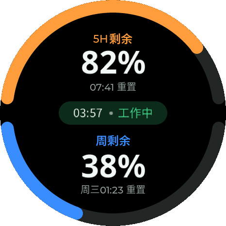
Codex-双额度 Codex-单额度
Codex-单额度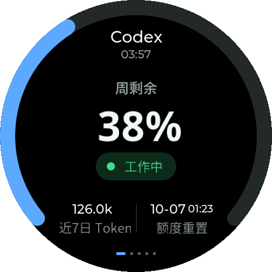
Codex-状态-工作中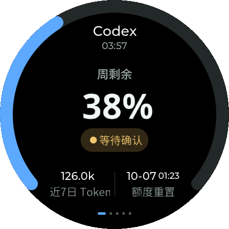
Codex-状态-等待确认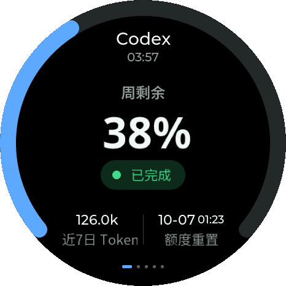
Codex-状态-已完成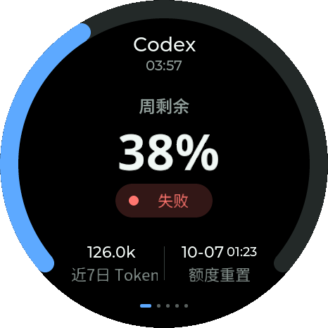
Codex-状态-失败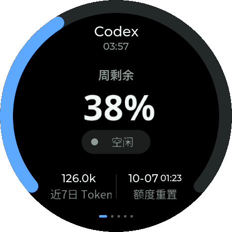
Codex-状态-空闲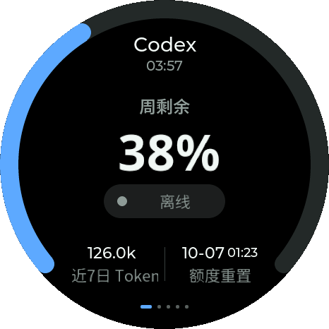
Codex-状态-离线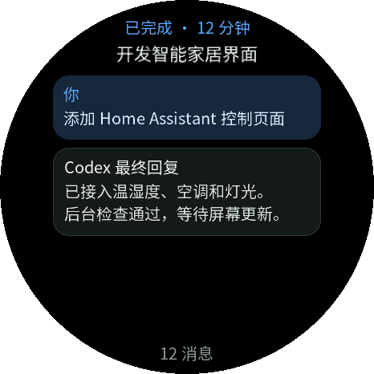
Codex-任务详情 Codex-任务详情-顶部
Codex-任务详情-顶部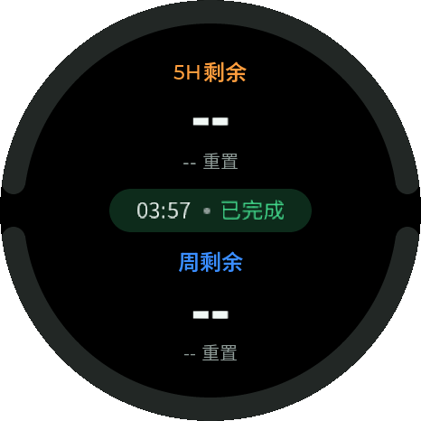
Codex-断线额度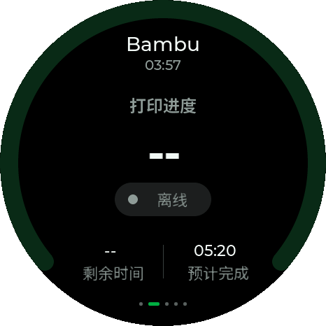
Bambu-状态-离线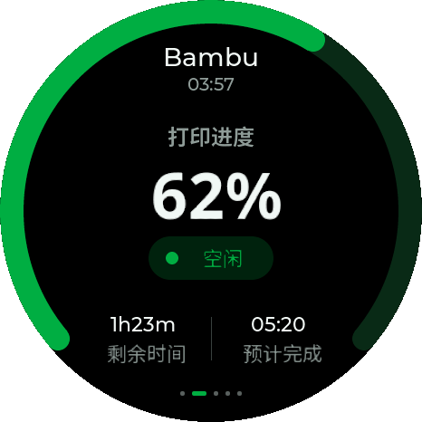
Bambu-状态-空闲Bambu-状态-准备中Bambu-状态-打印中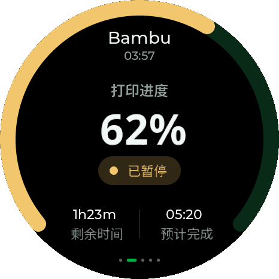
Bambu-状态-已暂停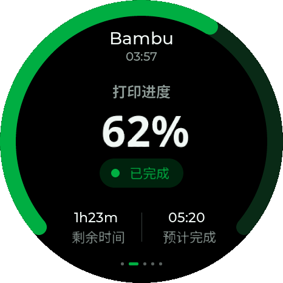
Bambu-状态-已完成Bambu-状态-取消中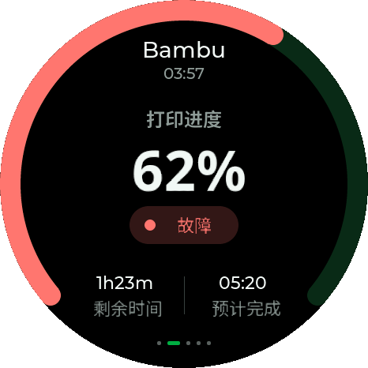
Bambu-状态-故障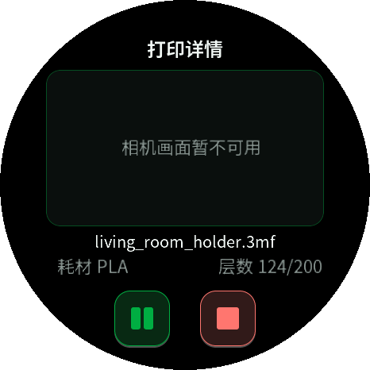
Bambu-详情-无相机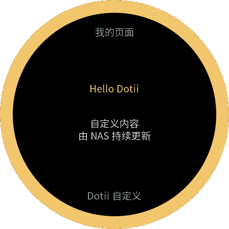
自定义-文本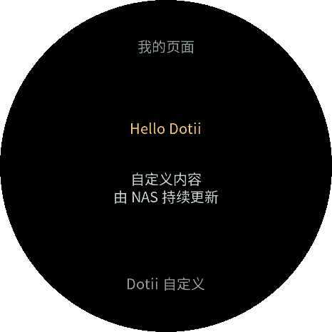
自定义-无圆环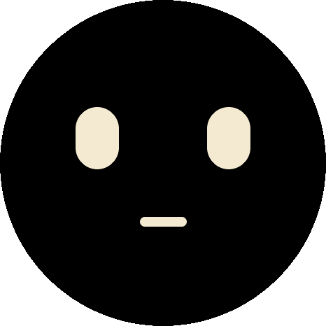
Dotii-表情-待机呼吸Dotii-表情-眨眼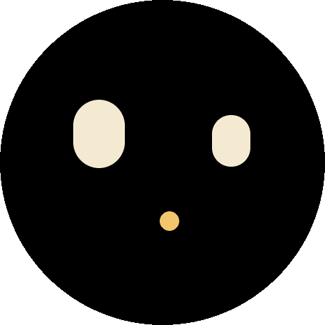
Dotii-表情-好奇Dotii-表情-困倦哈欠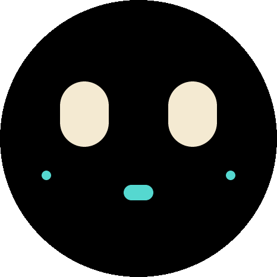
Dotii-表情-触摸回应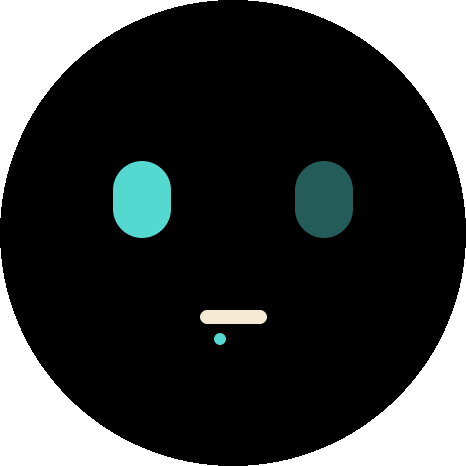
Dotii-表情-正在连接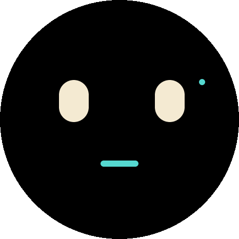
Dotii-表情-正在工作Dotii-表情-完成庆祝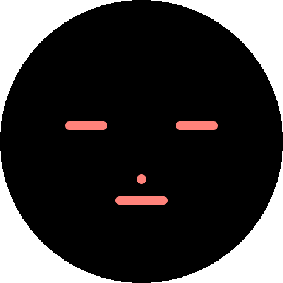
Dotii-表情-异常提醒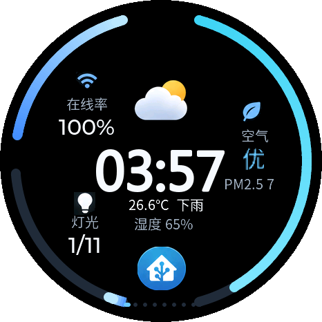
HA-蓝色圆环首页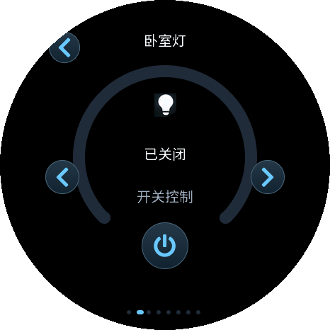
HA-灯光控制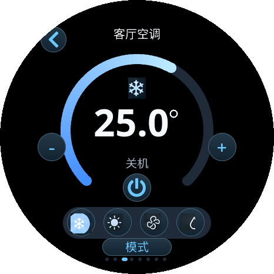
HA-空调控制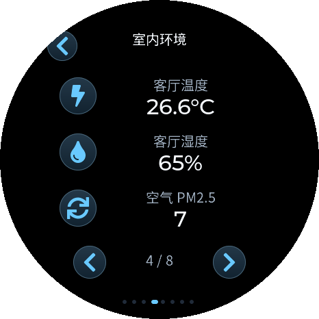
HA-室内环境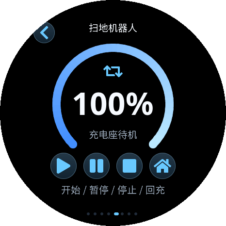
HA-扫地机器人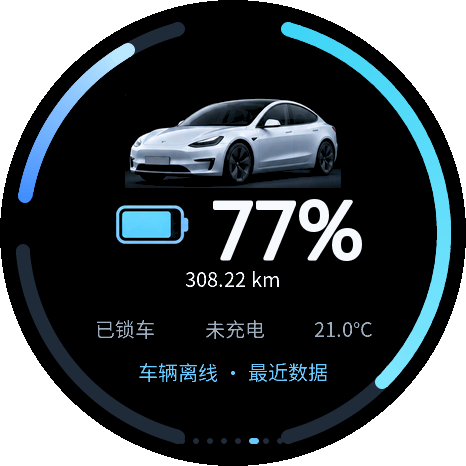
HA-车辆状态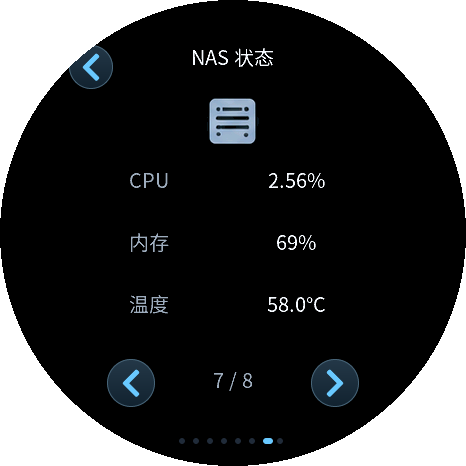
HA-NAS状态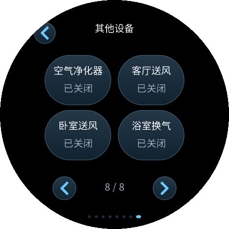
HA-其他设备 HA-卧室灯开关
HA-卧室灯开关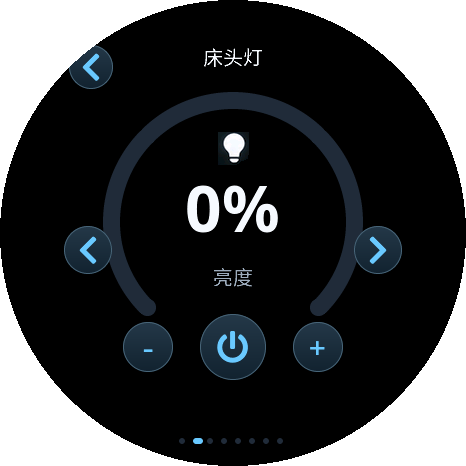
HA-床头灯调光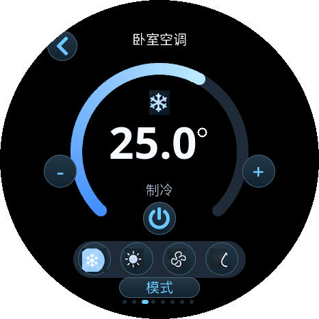
HA-空调圆环详情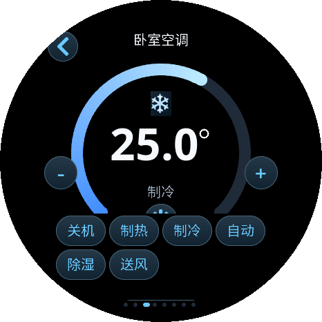
HA-空调模式选择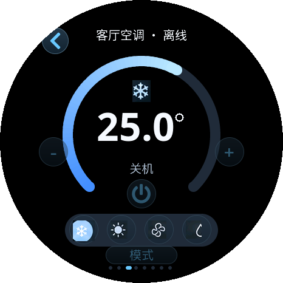
HA-离线保护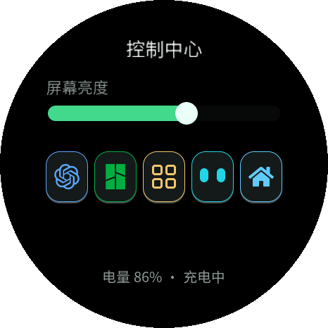
控制中心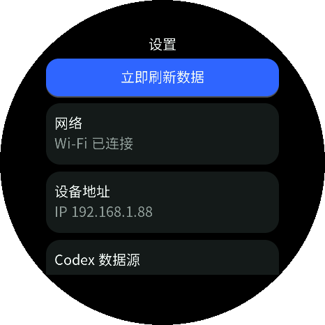
设置-网络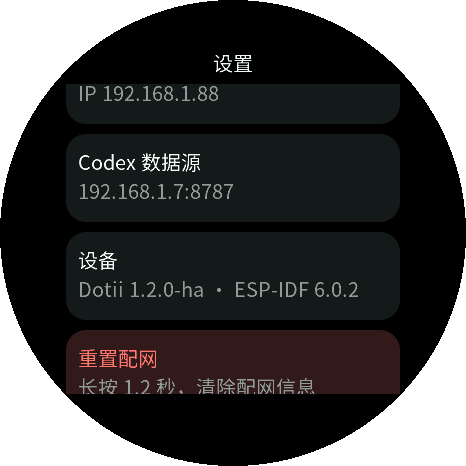
设置-设备与重置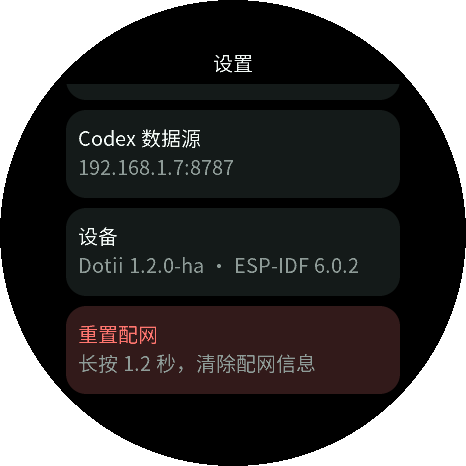
设置-重置配网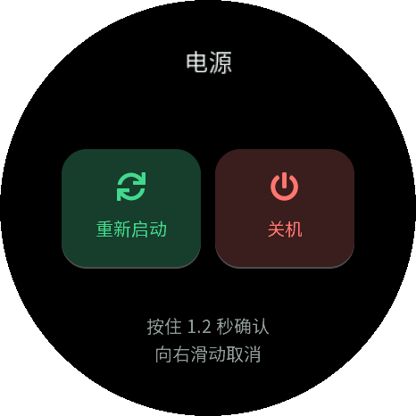
电源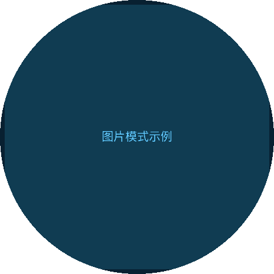
自定义-图片模式示例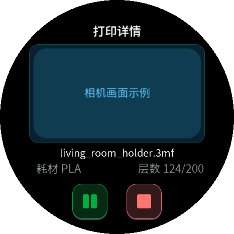
Bambu-相机模式示例息屏